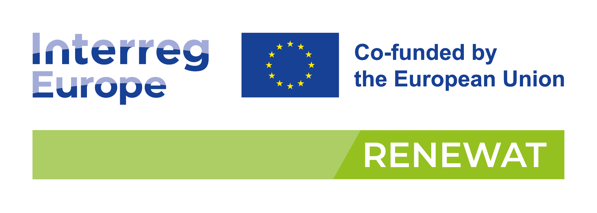

Mednarodni projekt RENEWAT (Obnovljiva energija in evropski vodni mlini) združuje devet partnerjev iz osmih različnih držav – Francije, Italije, Hrvaške, Slovenije, Litve, Poljske, Albanije in Ukrajine. Njegov namen je ozaveščanje lokalnih in regionalnih akterjev o ponovni uporabi mlinov in drugih vodnih objektov kot pomembnem viru obnovljive energije.
Cilj projekta je, da se ta pogosto spregledan vir vključi v lokalne in regionalne politike kot relevanten del mešanice obnovljivih virov energije. Evropske reke so bogate s hidravličnimi strukturami, katerih potencial pa pogosto ni izkoriščen – predvsem zaradi pomanjkanja znanja in administrativnih ovir.
Čeprav si številni lokalni promotorji prizadevajo za ponovno aktivacijo mlinov za proizvodnjo električne energije, se soočajo z vrsto birokratskih izzivov. Projekt RENEWAT si prizadeva usposobiti te akterje in jim ponuditi konkretna politična orodja ter dobre prakse iz različnih evropskih držav.
Glavni cilj je oblikovati skupno evropsko vizijo in enoten pristop k posodobitvi vodnih mlinov. S tem bo ustvarjen trajnostni model, ki omogoča proizvodnjo električne energije na osnovi tradicionalne infrastrukture in lokalnih naravnih virov.
Slovenski partner v projektu je Zavod energetska agencija za Savinjsko, Šaleško in Koroško (Zavod KSSENA), ki sodeluje pri prenosu znanja in praks v slovenski prostor.